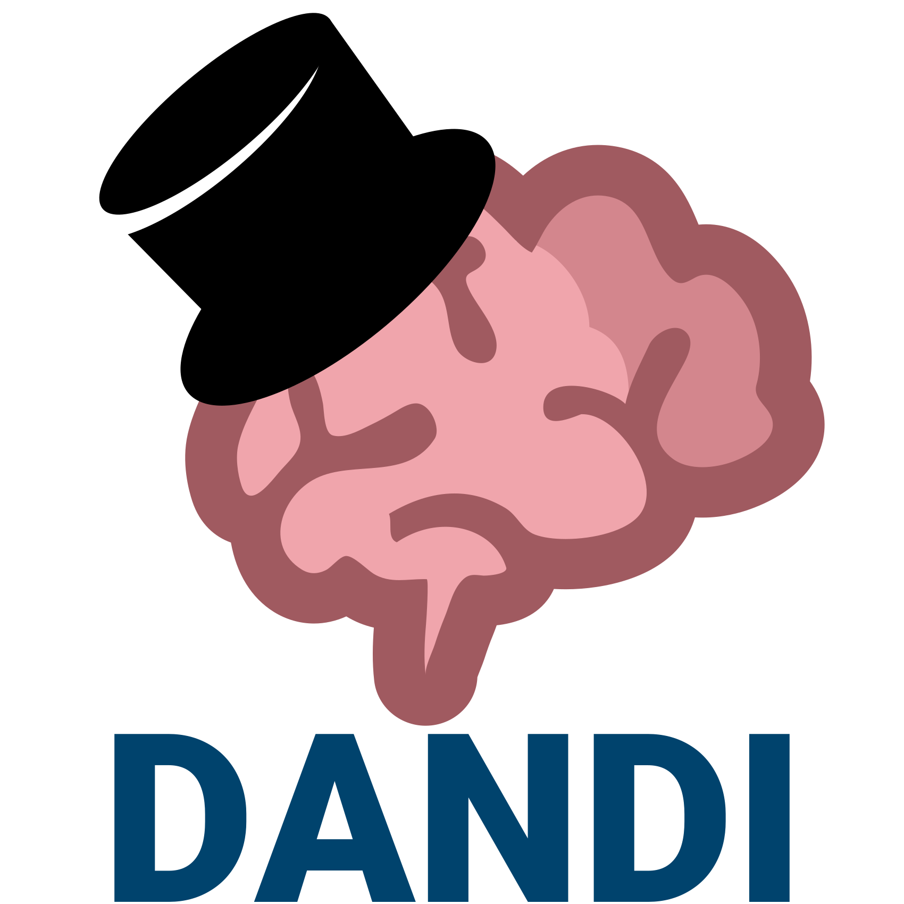

A few words of intro into
AI assisted coding
From vibe coding to spec-driven compound engineering
 @yarikoptic
@yarikoptic
Live slides/Sources: https://datasets.datalad.org/centerforopenneuroscience/talks/2026-ca-origami-retreat-aicoding.html

Reality Check

Disclaimer: This talk will not make you at once into AI coder.
But it will point to a few approaches you can start using TODAY!
And you MUST NOT forget about social aspect of the retreat!